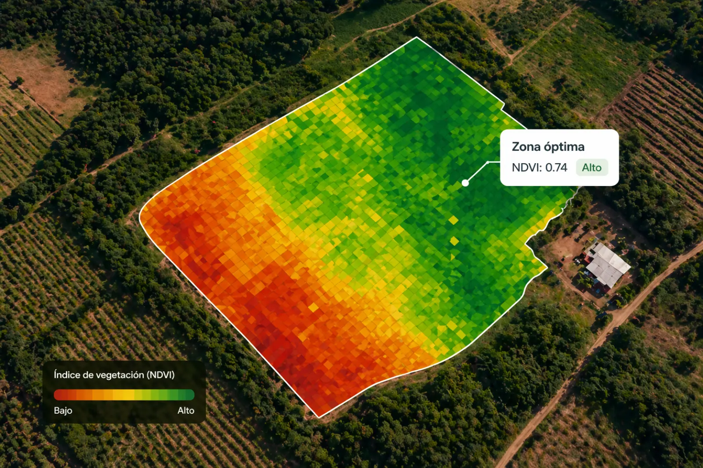

Katherine Cundano
Ingeniería en Sistemas
Desarrollo de plataforma, integración de datos satelitales y modelos climáticos para recomendaciones agrícolas.
Imágenes satelitales y datos climáticos que te ayudan a sembrar mejor y producir más.

Copernicus actualizado para decisiones confiables.
Monitoreo constante para anticipar riesgos.
Acciones claras para mejores resultados.
¿No tienes técnico?
Obtén una recomendación rápida según tu región usando datos climáticos y satelitales.
Selecciona tu región en el mapa.
Revisamos clima, humedad y condiciones actuales.
Te sugerimos cultivos adecuados para hoy.
Cómo funciona
Ubicamos tu región y conectamos datos satelitales actuales.
Evaluamos humedad, pendiente y estrés para cada parcela.
Semáforo, ventana de siembra y combinación recomendada.
Convertimos datos satelitales y climáticos en recomendaciones simples y útiles para productores y técnicos agrícolas.
Decisiones sin información clara sobre suelo, clima o cultivo.
Modelos que traducen datos complejos en acciones simples.
Trabajamos con técnicos y cooperativas para validar terreno.
QUIÉNES ESTAMOS DETRÁS
Somos estudiantes nicaragüenses apasionados por la tecnología, el diseño y el campo. Creamos PoliMilpa para convertir datos complejos en herramientas simples y útiles para agricultores.
Desarrollo de plataforma, integración de datos satelitales y modelos climáticos para recomendaciones agrícolas.
Diseño territorial, experiencia visual y organización de información agrícola para productores rurales.
PoliMilpa potencia tus acciones. El futuro del campo hoy, en tus decisiones.